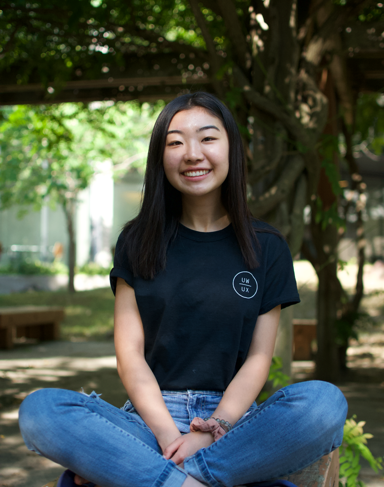

When I was 9 years old, I spent my spare time making origami animals and selling them to my classmates. After making (a whopping) $34, I wrote a letter and donated the entirety of my earnings to SickKids hospital. Despite the fact that I never heard back from them, it was from that point onwards that I knew I wanted to continue to be someone who worked hard to help others.
What excites me about design is how unique each case study has the potential to be. With every new problem space, I’m able to tap into a new world of perspectives, painpoints, and most importantly, ways in which I can help make peoples’ lives easier.
Through all the trial and error, I’ve learned that sometimes the best solutions aren’t always the most innovative and eye-catching. Often times, it means we need to cut the noise, think simplistically, and look at the problems that lie in plain sight.